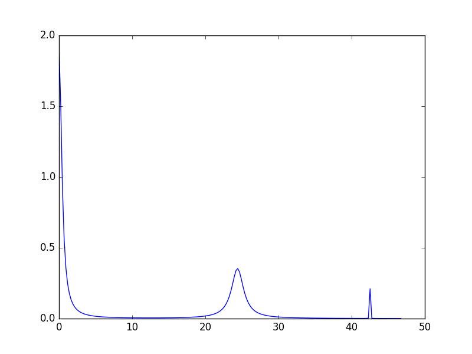

\(\renewcommand\AA{\unicode{x212B}}\)
Crystal Field Python Interface¶
The python facilities for Crystal Field calculations are available in Mantid from module CrystalField. The module provides two main classes: CrystalField defines various properties of a crystal field and CrystalFieldFit manages the fitting process.
Theoretical background can be found in the concept page and worked examples in the examples page.
Setting up crystal field parameters¶
A crystal field computation starts with creating an instance of the CrystalField class. The constructor has two mandatory arguments: Ion - the symbolic name of the ion, and Symmetry - the name of the point symmetry group of the field. The rest of the parameters are optional.
Possible values for the Ion argument are:
Ce, Pr, Nd, Pm, Sm, Eu, Gd, Tb, Dy, Ho, Er, Tm, Yb
These are the trivalent rare-earth ions. For other rare earth ions, use the equivalent trivalent ion based on the number of f-electrons in the outer shell (e.g. for Pr4+ (4f1) use Ce). The rare earth ions sets the correct value of the Lande g-factor. In addition, a pure spin ion with arbitrary (but half-integral) S (or J) values are also supported using the syntax: Ion=S<n> where <n> is an integer or half-integer value, e.g. Ion=S2 or Ion=S1.5. In these cases, the g-factor is set to gJ = 2. The prefix letter can also be J instead of S, and lower case letters are also supported. (e.g. Ion=j1, Ion=s2.5 and Ion=J0.5 are all valid).
Allowed values for Symmetry are:
C1, Ci, C2, Cs, C2h, C2v, D2, D2h, C4, S4, C4h, D4, C4v, D2d, D4h, C3,
S6, D3, C3v, D3d, C6, C3h, C6h, D6, C6v, D3h, D6h, T, Td, Th, O, Oh
The minimum code to create a crystal field object is:
from CrystalField import CrystalField
cf = CrystalField('Ce', 'C2v')
Names of the crystal field parameters have the form Bnn and IBnn where nn are two digits between 0 and 6. Bnn is the real and IBnn is the imaginary part of a complex parameter. If a parameter isn’t set explicitly its default value is 0. To set a parameter pass it to the CrystalField constructor as a keyword argument, e.g.:
cf = CrystalField('Ce', 'C2v', B20=0.37737, B22=3.9770)
An alternative way to set a parameter is to use the square brackets with a CrystalField object:
cf['B40'] = -0.031
Which can also be used to query the value of a parameter:
b = cf['B40']
Calculating the Eigensystem¶
The CrystalField class has methods to calculate the Hamiltonian and its eigensystem:
# Calculate and return the Hamiltonian matrix as a 2D numpy array.
h = cf.getHamiltonian()
# Calculate and return the eigenvalues of the Hamiltonian as a 1D numpy array.
e = cf.getEigenvalues()
# Calculate and return the eigenvectors of the Hamiltonian as a 2D numpy array.
w = cf.getEigenvectors()
It is efficient to call the above methods multiple times as all the outputs are cached and the calculations are repeated only after a parameter changes.
Eigenvectors can also be printed in a more human readable form:
# Calculate and return the eigenvectors of the Hamiltonian as a formatted string.
w = cf.printWavefunction()
# Calculate and return a specific eigenvector as a formatted string.
w = cf.printWavefunction(1)
# Calculate and return a list of eigenvectors as a formatted string.
w = cf.printWavefunction([0,2,3])
Calculating a Spectrum¶
To calculate a spectrum CrystalField needs to know the sample temperature and the shape of the peaks.
The temperature can be set either via a keyword argument Temperature of the constructor or using the Temperature property:
# Using the keyword argument
cf = CrystalField('Ce', 'C2v', B20=0.37737, B22=3.9770, Temperature=44)
# Using the property
cf.Temperature = 44
Knowing the temperature allows us to calculate a peak list: a list of transition energies and intensities.:
print cf.getPeakList()
Which produces the output:
[[ 0.00000000e+00 2.44006198e+01 4.24977124e+01 1.80970926e+01 -2.44006198e+01]
[ 2.16711565e+02 8.83098530e+01 5.04430056e+00 1.71153708e-01 1.41609425e-01]]
The first row are the energies (in meV) and the second row are the integrated intensities (in milibarn per steradian).
The number of peaks that the function returns is controlled by two tolerance parameters: ToleranceEnergy and ToleranceIntensity. If a peak has an intensity below the value of ToleranceIntensity the peak is ignored. It two peaks have a difference in the energies smaller than ToleranceEnergy they are combined into a single peak.
If we set ToleranceIntensity of the above crystal field object to 1 mb/sr we’ll have only three peaks in the list:
cf.ToleranceIntensity = 1
print cf.getPeakList()
The new output:
[[ 0. 24.40061976 42.49771237]
[ 216.71156467 88.30985303 5.04430056]]
To calculate a spectrum we need to define the shape of each peak (peak profile function) and its default width (FWHM). The width can be set either via a keyword argument or a property with name FWHM. If the peak shape isn’t set the default of Lorentzian is assumed. To set a different shape use the PeakShape property:
cf.PeakShape = 'Gaussian'
cf.FWHM = 0.9
The values of PeakShape are expected to be names of Mantid peak fit functions. At the moment only Lorentzian and Gaussian can be used.
After the peak shape is defined a spectrum can be calculated:
sp = cf.getSpectrum()
The output is a tuple of two 1d numpy arrays (x, y) that can be used with matplotlib to plot:
import matplotlib.pyplot as plt
plt.plot(*sp)
plt.show()
{kind=link}
It is possible to change parameters of individual peaks separately. Note though that only the shape parameters can be changed, the peak centre and the integrated intensity are defined by the crystal field parameters. To change the width of a peak use the following syntax:
# If the peak shape is Gaussian
cf.peaks.param[1]['Sigma'] = 2.0
cf.peaks.param[2]['Sigma'] = 0.01
# If the peak shape is Lorentzian
cf.peaks.param[1]['FWHM'] = 2.0
cf.peaks.param[2]['FWHM'] = 0.01
The three peaks now have all different widths. The first peak (index 0) keeps the default value.
{kind=link}
If called without arguments getSpectrum() determines automatically the range and number of the x-points. To have more control of how the spectrum is calculated either a list (or numpy array) of x-values or a keyword argument using x_range with a tuple containing the range for the x values can be provided as a first argument to getSpectrum. Alternatively, the x-values can be taken from a workspace:
# Use a list for x-values
x = [0, 1, 2, 3, 4]
sp = cf.getSpectrum(x)
# Use a tuple for x range
sp = cf.getSpectrum(x_range=(0,30))
# Use the first spectrum of a workspace
sp = cf.getSpectrum(ws)
# Use the i-th spectrum of a workspace
sp = cf.getSpectrum(ws, i)
Plotting¶
To plot a spectrum using the graphing facilities of Mantid CrystalField has method plot. It has the same arguments as getSpectrum and opens a window with a plot, e.g.:
cf.plot()
In addition to plotting, the plot method creates a workspace named CrystalField_<Ion> with the plot data. Subsequent calls to plot for the same CrystalField object will use the same plot window as created by the first call unless this window has been closed in the mean time.
Adding a Background¶
A background has two components: a peak and a general background function. Set a background using the background property:
from CrystalField import CrystalField, CrystalFieldFit, Background, Function
cf = CrystalField('Ce', 'C2v', B20=0.37737, B22=3.9770, B40=-0.031787, B42=-0.11611, B44=-0.12544,
Temperature=44.0, FWHM=1.1)
cf.background = Background(peak=Function('Gaussian', Height=10, Sigma=1),
background=Function('LinearBackground', A0=1.0, A1=0.01))
Here is an example of how to access the parameters of the background:
h = cf.background.peak.param['Height']
a1 = cf.background.background.param['A1']
Setting Ties and Constraints¶
Setting ties and constraints are done by calling the ties and constraints methods of the CrystalField class or its components. The Bnn parameters are tied by the CrystalField class directly specifying the tied parameter as a keyword argument:
cf.ties(B20=1.0, B40='B20/2')
The constraints are passed as strings containing expressions:
cf.constraints('1 < B22 <= 2', 'B22 < 4')
For the parameters of the background the syntax is the same but the methods are called on the background property:
cf.background.peak.ties(Height=10.1)
cf.background.peak.constraints('Sigma > 0')
cf.background.background.ties(A0=0.1)
cf.background.background.constraints('A1 > 0')
The names of the peak parameters both in ties and constraints must include the index of the peak to which they belong. Here we follow the naming convention of the CompositeFunction: f<n>.<name>, where <n> stands for an integer index staring at 0 and <name> is the name of the parameter. For example, f1.Sigma, f3.FWHM. Because names now contain the period symbol ‘.’ keyword arguments cannot be used. Instead we must pass a dictionary containing ties. The keys are parameter names and the values are the ties:
cf.peaks.ties({'f2.FWHM': '2*f1.FWHM', 'f3.FWHM': '2*f2.FWHM'})
Constraints are a list of strings:
cf.peaks.constraints('f0.FWHM < 2.2', 'f1.FWHM >= 0.1')
If a parameter of all peaks needs to be tied/constrained with the same expression then the following shortcut methods can be used:
cf.peaks.tieAll('Sigma=0.1', 3)
cf.peaks.constrainAll('0 < Sigma < 0.1', 4)
where the first argument is the general formula of the tie/constraint and the second is the number of peaks to apply to. There is also a version for a range of peak indices:
cf.peaks.tieAll('Sigma=f0.Sigma', 1, 3)
which is equivalent to:
cf.peaks.ties({'f1.Sigma': 'f0.Sigma', 'f2.Sigma': 'f0.Sigma', 'f3.Sigma': 'f0.Sigma'})
Setting Resolution Model¶
A resolution model is a way to constrain the widths of the peaks to realistic numbers which agree with a measured or calculated instrument resolution function. A model is a function that returns a FWHM for a peak centre. The Crystal Field python interface defines the helper class ResolutionModel to help define and set resolution models.
To construct an instance of ResolutionModel one needs to provide up to four input parameters. The first parameter, model, is mandatory and can be either of:
A tuple containing two arrays (lists) of real numbers which will be interpreted as tabulated values of the model function. The first element of the tuple is a list of increasing values for peak centres, and the second element is a list of corresponding widths. Values between the tabulated peak positions will be linearly interpolated.
A python function that takes a
numpy.ndarrayof peak positions and returns a numpy array of widths.
If the model is a tuple of two arrays then no additional parameters are required. If it’s a function then the rest of the parameters define how to tabulate this function. xstart and xend define the interval of interpolation which must include all fitted peaks. The last argument is accuracy that defaults to \(10^{-4}\) and defines an approximate desired accuracy of the approximation. The interval will be split until the largest error of the interpolation is smaller than accuracy. Note that subdivision cannot go on to infinity as the number of points is limited by the class member ResolutionModel.max_model_size.
Example of setting a resolution model using a tuple of two arrays:
from CrystalField import CrystalField, ResolutionModel
rm = ResolutionModel(([1, 2, 3, ...., 100], [0.1, 0.3, 0.35, ..., 2.1]))
cf = CrystalField('Ce', 'C2v', B20=0.37737, B22=3.9770, ..., Temperature=44.0, ResolutionModel=rm)
Or using an arbitrary function my_func:
def my_func(en):
return (25-en)**(1.5) / 200 + 0.1
rm = ResolutionModel(my_func, xstart=0.0, xend=24.0, accuracy=0.01)
cf = CrystalField('Ce', 'C2v', B20=0.37737, B22=3.9770, ..., Temperature=44.0, ResolutionModel=rm)
Finally, the PyChop interface may be used to generate the resolution function for a particular spectrometer:
from pychop.Instruments import Instrument
marires = Instrument('MARI')
marires.setChopper('S')
marires.setFrequency(250)
marires.setEi(30)
rm = ResolutionModel(marires.getResolution, xstart=0.0, xend=29.0, accuracy=0.01)
cf = CrystalField('Ce', 'C2v', B20=0.37737, B22=3.9770, ..., Temperature=44.0, ResolutionModel=rm)
When a resolution model is set, the peak width will be constrained to have a value close to the model. The degree of deviation is controlled by the FWHMVariation parameter. It has the default of 0.1 and is the maximum difference from the value given by the resolution model a width can have. If set to 0 the widths will be fixed to their calculated values (depending on the instant values of their peak centres). For example:
cf = CrystalField('Ce', 'C2v', B20=0.37737, B22=3.9770, ..., Temperature=44.0, ResolutionModel=rm, FWHMVariation=0.1)
will allow the peak widths to vary between \(\Delta(E)-0.1\) and \(\Delta(E)+0.1\) where \(\Delta(E)\) is the value of the resolution model at the peak position \(E\).
Defining Multiple Spectra¶
A CrystalField object can be configured to work with multiple spectra. In this case many of the object’s properties become lists. Here is an example of defining a CrystalField object with two spectra:
cf = CrystalField('Ce', 'C2v', B20=0.37737, B22=3.9770, B40=-0.031787, B42=-0.11611, B44=-0.12544,
Temperature=[44.0, 50], FWHM=[1.1, 0.9])
cf.PeakShape = 'Lorentzian'
cf.peaks[0].param[0]['FWHM'] = 1.11
cf.peaks[1].param[1]['FWHM'] = 1.12
cf.background = Background(peak=Function('Gaussian', Height=10, Sigma=0.3),
background=Function('FlatBackground', A0=1.0))
cf.background[1].peak.param['Sigma'] = 0.8
cf.background[1].background.param['A0'] = 1.1
Note how Temperature, FWHM, peaks and background become lists. They must have the same size. Ties and constraints similarly change:
# The B parameters are common for all spectra - syntax doesn't change
cf.ties(B20=1.0, B40='B20/2')
cf.constraints('1 < B22 <= 2', 'B22 < 4')
# Backgrounds and peaks are different for different spectra - must be indexed
cf.background[0].peak.ties(Height=10.1)
cf.background[0].peak.constraints('Sigma > 0.1')
cf.background[1].peak.ties(Height=20.2)
cf.background[1].peak.constraints('Sigma > 0.2')
cf.peaks[1].tieAll('FWHM=2*f1.FWHM', 2, 5)
cf.peaks[0].constrainAll('FWHM < 2.2', 1, 4)
The resolution model also needs to be initialised from a list:
x0, y0, x1, y1 = [ ... ], [ ... ], [ ... ], [ ... ]
rm = ResolutionModel([(x0, y0), (x1, y1)])
# or
rm = ResolutionModel([func0, func1], 0, 100, accuracy = 0.01)
cf.ResolutionModel = rm
To calculate a spectrum call the same method getSpectrum but pass the spectrum index as its first parameter:
# Calculate second spectrum, use the generated x-values
sp = cf.getSpectrum(1)
# Calculate third spectrum, use a list for x-values
x = [0, 1, 2, 3, ...]
sp = cf.getSpectrum(2, x)
# Calculate second spectrum, use the first spectrum of a workspace
sp = cf.getSpectrum(1, ws)
# Calculate first spectrum, use the i-th spectrum of a workspace
sp = cf.getSpectrum(0, ws, i)
Note that the attributes Temperature, FWHM, peaks and background may be set separately from the constructor, e.g.:
cf = CrystalField('Ce', 'C2v', B20=0.37737, B22=3.9770, B40=-0.031787, B42=-0.11611, B44=-0.12544)
cf.Temperature = [5, 50]
However, each time that Temperature is set, if it defines a different number of spectra from the previous value (e.g. if Temperature was initially empty or None and is then defined as in the example above, or if Temperature was initially a scalar value but is then redefined to be a list or vice versa), then all Ties, Constraints, FWHM and peaks parameters are cleared. Any crystal field parameters previously defined will be retained, however.
Fitting¶
To fit the crystal field and peak parameters first create a CrystalField object as described above. Then create an instance (object) of the CrystalFieldFit class:
from CrystalField import CrystalFieldFit
# In case of a single spectrum (ws is a workspace)
fit = CrystalFieldFit(Model=cf, InputWorkspace=ws)
# Or for multiple spectra
fit = CrystalFieldFit(Model=cf, InputWorkspace=[ws1, ws2])
Then call fit() method:
fit.fit()
After fitting finishes the CrystalField object updates automatically and contains new fitted parameter values.
The crystal field fit function is derived from the standard Mantid fit function and can be used with all properties described in Fit.
Two step fitting¶
Alternatively, a two step fitting process can be used. Please note that this fitting process is much slower than the standard fitting described above. In this two step process only crystal field parameters are fitted in the first step and only peak parameters in the second step.
Two step fitting is only available for single ions at the moment. It can be used both for a single spectrum or multiple spectra.
There are two versions of two step fitting. One version is entirely based on the standard Mantid fit function and attempts to fit all free field parameters at the same time in the first step. It is used by calling the two_step_fit() method for an instance of the CrystalFieldFit class:
fit.two_step_fit()
The other version, two_step_fit_sc(), applies scipy.optimize.minimize to fit each of the free field parameters sequentially in the first step but uses
Mantid fitting for the peak parameters:
fit.two_step_fit_sc()
Both methods allow overwriting the maximal number of iterations both per step and overall as well as the minimizer used for fitting per step. For example:
fit.two_step_fit(OverwriteMaxIterations=[2,10], OverwriteMinimizers=['BFGS', 'Levenberg-Marquardt'], Iterations=30)
runs the first step for up to 2 iterations with the ‘BFGS’ minimizer and then the second step for up to 10 iterations with the ‘Levenberg-Marquardt’ minimizer. The whole fitting process is limited to 30 iterations.
A complete list of minimizers available for scipy.optimize.minimize can be found at: https://docs.scipy.org/doc/scipy/reference/generated/scipy.optimize.minimize.html
If the minimizer is not overwritten, ‘L-BFGS-B’ is set as a default for scipy.optimize.minimize and ‘Levenberg-Marquardt’ for Mantid fitting.
GOFit fitting¶
The algorithms contained within the GOFit package can also be used from the Crystal Field API. This package is designed for the global optimization of parameters using a non-linear least squares cost function. For more information about the algorithms used in this implementation, please see the related RAL Technical Report.
The GOFit package contains three optimization algorithms called regularisation, multistart and
alternating. Please note that the fitting process for multistart and alternating can be slow due to the residuals being evaluated in python.
Before you can use the GOFit package in Mantid, you will need to pip install gofit into your environment because it is an external dependency. See the pip install instructions for Mantid.
Once installed, it should be possible to import the package and perform a fit using the regularisation algorithm by passing a GOFit callable into the Crystal Field API:
import gofit
fit.gofit(algorithm_callable=gofit.regularisation, jacobian=True, maxit=500)
The multistart algorithm requires you to pass in parameter_bounds and the number of samples:
parameter_bounds = {'B20': (-0.3013,0.3013), 'B22': (-0.5219,0.5219), 'B40': (-0.004624,0.004624), 'B42': (-0.02068,0.02068), 'B44': (-0.02736,0.02736),
'B60': (-0.0001604,0.0001604), 'B62': (-0.001162,0.001162), 'B64': (-0.001273,0.001273), 'B66': (-0.001724,0.001724),
'IntensityScaling': (0.,10.), 'f0.FWHM': (0.1,5.0), 'f1.FWHM': (0.1,5.0), 'f2.FWHM': (0.1,5.0), 'f3.FWHM': (0.1,5.0), 'f4.FWHM': (0.1,7.0)}
fit.gofit(algorithm_callable=gofit.multistart, parameter_bounds=parameter_bounds, samples=100, jacobian=True, maxit=500, scaling=True)
The alternating algorithm also requires you to pass in parameter_bounds and the number of samples:
fit.gofit(algorithm_callable=gofit.alternating, parameter_bounds=parameter_bounds, samples=100, maxit=500)
A full list of possible arguments for these algorithm can be found here. The output from these fits should be a matrix workspace containing the fitted data, and a table workspace containing the fitted parameters.
Multiple Ions¶
If there are multiple ions you can define CrystalField objects for each ion separately then add them together to create a CrystalFieldMultiSite object:
params = {'B20': 0.377, 'B22': 3.9, 'B40': -0.03, 'B42': -0.116, 'B44': -0.125,
'Temperature': [44.0, 50], 'FWHM': [1.1, 0.9]}
cf1 = CrystalField('Ce', 'C2v', **params)
cf2 = CrystalField('Pr', 'C2v', **params)
cfms = cf1 + cf2
The expression that combines the CrystalField objects also defines the contributions of each site into the overall intensity. The higher the coefficient of the object in the expression the higher its relative contribution. For example:
cf = 2*cf1 + cf2
means that the intensity of cf1 should be twice that of cf2.
Alternatively, you can create a CrystalFieldMultiSite object directly. This takes Ions, Symmetries, Temperatures and peak widths as lists:
from CrystalField import CrystalFieldMultiSite
cfms = CrystalFieldMultiSite(Ions=['Ce', 'Pr'], Symmetries=['C2v', 'C2v'], Temperatures=[44.0], FWHMs=[1.1])
Note that Temperature and FWHM (without plural) can also be used in place of the equivalent plural parameters. To access parameters of a CrystalFieldMultiSite object, prefix them with the ion index:
cfms['ion0.B40'] = -0.031
cfms['ion1.B20'] = 0.37737
b = cfms['ion0.B22']
Parameters can be set when creating the object by passing in a dictionary using the parameters keyword:
cfms = CrystalFieldMultiSite(Ions=['Ce', 'Pr'], Symmetries=['C2v', 'C2v'], Temperatures=[44.0], FWHMs=[1.1],
parameters={'ion0.B20': 0.37737, 'ion0.B22': 3.9770, 'ion1.B40':-0.031787,
'ion1.B42':-0.11611, 'ion1.B44':-0.12544})
A background can also be set this way, or using cfms.background. It can be passed as a string, a Function object(s), or a CompositeFunction object:
cfms = CrystalFieldMultiSite(Ions='Ce', Symmetries='C2v', Temperatures=[20], FWHMs=[1.0],
Background='name=Gaussian,Height=0,PeakCentre=1,Sigma=0;name=LinearBackground,A0=0,A1=0')
cfms = CrystalFieldMultiSite(Ions=['Ce'], Symmetries=['C2v'], Temperatures=[50], FWHMs=[0.9],
Background=LinearBackground(A0=1.0), BackgroundPeak=Gaussian(Height=10, Sigma=0.3))
cfms = CrystalFieldMultiSite(Ions='Ce', Symmetries='C2v', Temperatures=[20], FWHMs=[1.0],
Background= Gaussian(PeakCentre=1) + LinearBackground())
Ties and constraints are set similarly to CrystalField objects. f prefixes have been changed to be more descriptive:
cfms = CrystalFieldMultiSite(Ions=['Ce','Pr'], Symmetries=['C2v', 'C2v'], Temperatures=[44, 50], FWHMs=[1.1, 0.9],
Background=FlatBackground(), BackgroundPeak=Gaussian(Height=10, Sigma=0.3),
parameters={'ion0.B20': 0.37737, 'ion0.B22': 3.9770, 'ion1.B40':-0.031787,
'ion1.B42':-0.11611, 'ion1.B44':-0.12544})
cfms.ties({'sp0.bg.f0.Height': 10.1})
cfms.constraints('sp0.bg.f0.Sigma > 0.1')
cfms.constraints('ion0.sp0.pk1.FWHM < 2.2')
cfms.ties({'ion0.sp1.pk2.FWHM': '2*ion0.sp1.pk1.FWHM', 'ion1.sp1.pk3.FWHM': '2*ion1.sp1.pk2.FWHM'})
Parameters which are not allowed by the specified symmetry will be fixed to be zero, but unlike for the single-site case, all other parameters are assumed to be free (in the single-site case, parameters which are unset are assumed to be fixed to be zero). For the multi-site case, parameters must be fixed explicitly. For example:
params = {'ion0.B20': 0.37737, 'ion0.B22': 3.9770, 'ion1.B40':-0.031787, 'ion1.B42':-0.11611, 'ion1.B44':-0.12544}
cf = CrystalFieldMultiSite(Ions=['Ce', 'Pr'], Symmetries=['C2v', 'C2v'], Temperatures=[44.0, 50.0],
FWHMs=[1.0, 1.0], ToleranceIntensity=6.0, ToleranceEnergy=1.0, FixAllPeaks=True,
parameters=params)
cf.fix('ion0.BmolX', 'ion0.BmolY', 'ion0.BmolZ', 'ion0.BextX', 'ion0.BextY', 'ion0.BextZ', 'ion0.B40',
'ion0.B42', 'ion0.B44', 'ion0.B60', 'ion0.B62', 'ion0.B64', 'ion0.B66', 'ion0.IntensityScaling',
'ion1.BmolX', 'ion1.BmolY', 'ion1.BmolZ', 'ion1.BextX', 'ion1.BextY', 'ion1.BextZ', 'ion1.B40',
'ion1.B42', 'ion1.B44', 'ion1.B60', 'ion1.B62', 'ion1.B64', 'ion1.B66', 'ion1.IntensityScaling',
'sp0.IntensityScaling', 'sp1.IntensityScaling')
chi2 = CalculateChiSquared(str(cf.function), InputWorkspace=ws1, InputWorkspace_1=ws2)[1]
fit = CrystalFieldFit(Model=cf, InputWorkspace=[ws1, ws2], MaxIterations=10)
fit.fit()
Calculating a spectrum can be done with CrystalFieldMultiSite in the same way as a CrystalField object.
CrystalFieldMultiSite can also be used in the single-site case to use the CrystalFieldFunction fitting function. It can be used like a CrystalField object in this way, although Temperatures and FWHMs must still be passed as lists:
cfms = CrystalFieldMultiSite(Ions='Ce', Symmetries='C2', Temperatures=[25], FWHMs=[1.0], PeakShape='Gaussian',
BmolX=1.0, B40=-0.02)
Intensity Scaling¶
The IntensityScaling parameter allows applying of a scale factor to the data. This scale factor is not applied immediately but only when a fit is run. As a consequence, a spectrum plotted after setting an IntensityScaling parameter but before running the fit will remain unchanged. Unlike other parameters the default value for IntensityScaling is 1 instead of 0.
There are differences on how to use the IntensityScaling parameter(s) depending on the use-case:
Single ions fitted to a single spectrum¶
When fitting a single ion symmetry to a single spectrum IntensityScaling is set to a single value:
cf = CrystalField('Ce', 'C2v', B20=0.37737, B22=3.9770, B40=-0.031787, B42=-0.11611, B44=-0.12544, Temperature=44.0,
FWHM=1.1, IntensityScaling=3.0)
Instead of initializing IntensityScaling in the constructor this parameter can also be set later:
cf.IntensityScaling = 3.0
In both cases IntensityScaling is initially set to a value of 3.0 but can be varied during the fitting process. Only with a tie on IntensityScaling the value remains fixed:
cf.ties(IntensityScaling = 3.0)
Single ions fitted to multiple spectra¶
In case of multiple spectra the IntensityScaling parameter is replaced by a list of values. The size of this list must match the size of the Temperature list:
cf = CrystalField('Ce', 'C2v', B20=0.37737, B22=3.9770, B40=-0.031787, B42=-0.11611, B44=-0.12544,
Temperature=[44.0, 50.0], FWHM=[1.1, 0.9], IntensityScaling=[3.0, 0.05])
The parameters for IntensityScaling can also be initialized later:
cf.IntensityScaling=[3.0, 0.05]
When setting a tie the value for an IntensityScaling parameter can be set directly using the index of the parameter:
cf.ties(IntensityScaling1 = 5.0)
In the example above the initial value of the second IntensityScaling parameter would be ignored and permanently set to 5.
Intensity scaling for multiple ions¶
For multiple ions there are two options for creating a CrystalFieldMultiSite object. Either two CrystalField objects are combined or a CrystalFieldMultiSite object is created directly. The following example:
cf = cf1 + 0.5*cf2
creates a CrystalFieldMultiSite object with cf1 as ion0 and cf2 as ion1. It is also possible to have scaling factors for both CrystalField objects:
cf = 2*cf1 + 3*cf2
The scaling factors are also used as the IntensityScaling setting for the respective ion.
After combining CrystalField objects to a CrystalFieldMultiSite object further changes to the original CrystalField objects are not reflected in the CrystalFieldMultiSite object. Furthermore, the CrystalFieldMultiSite object does not have a set function for IntensityScaling parameters. As a consequence, it is not possible to set these parameters later as for the CrystalField object.
Multiple ions fitted to a single spectrum¶
When combining two CrystalField objects for a single spectrum to a CrystalFieldMultiSite object the original values for IntensityScaling are ignored:
params = {'B20': 0.377, 'B22': 3.9, 'B40': -0.03, 'B42': -0.116, 'B44': -0.125,
'Temperature': [44.0], 'FWHM': [1.1], 'IntensityScaling': [0.2]}
cf1 = CrystalField('Ce', 'C2v', **params)
cf2 = CrystalField('Pr', 'C2v', **params)
cfms = 2*cf1 + cf2
results in the following CrystalFieldMultiSite object and tie:
from CrystalField import CrystalFieldMultiSite
cfms = CrystalFieldMultiSite(Ions=['Ce', 'Pr'], Symmetries=['C2v', 'C2v'], Temperatures=[44.0], FWHMs=[1.1], abundances=[2.0, 1.0]
parameters={'ion0.B20':0.377,'ion0.B22':3.9,'ion0.B40':-0.03,'ion0.B42':-0.116,'ion0.B44':-0.125,
'ion1.B20':0.377,'ion1.B22':3.9,'ion1.B40':-0.03,'ion1.B42':-0.116,'ion1.B44':-0.125,
`ion0.IntensityScaling`:2.0,`ion1.IntensityScaling`:1.0})
cfms.ties({'ion1.IntensityScaling' : '0.5*ion0.IntensityScaling'})
In addition to creating the equivalent CrystalFieldMultiSite object the coefficient is used to set a tie for the IntensityScaling parameter of ion1 relative to the IntensityScaling parameter of ion0. For the tie the coefficient of the respective ion is divided by the coefficient of the ion with the greatest coefficient. The coefficients from the combining expression are stored as abundances.
Creating the CrystalFieldMultiSite object directly allows for more flexibility. First of all, instead of setting values for abundances it is possible to set the tie directly. Furthermore, if no ties for IntensityScaling are required this can be achieved by not defining any abundances in the constructor. Without a tie the IntensityScaling parameters for each ion can be set individually to an initial value and might vary during the fitting process.
Multiple ions fitted to multiple spectra¶
When fitting multiple ions to multiple spectra the IntensityScaling factor is the product of the IntensityScaling factor of the respective ion and the respective spectrum.
The IntensityScaling factors for the spectra are preserved from the CrystalField objects in the combination. If only one of the CrystalField objects has IntensityScaling values set these are used for the CrystalFieldMultiSite object. In case of different settings for the original CrystalField objects the values for the object defining ion0 are used and a warning about this mismatch displayed.
Creating the CrystalFieldMultiSite object directly allows to set each of the IntensityScaling values individually:
from CrystalField import CrystalFieldMultiSite
cfms = CrystalFieldMultiSite(Ions=['Ce', 'Pr'], Symmetries=['C2v', 'C2v'], Temperatures=[44.0, 50.0], FWHMs=[1.1, 0.9],
parameters={'ion0.B20':0.377,'ion0.B22':3.9,'ion0.B40':-0.03,'ion0.B42':-0.116,'ion0.B44':-0.125,
'ion1.B20':0.377,'ion1.B22':3.9,'ion1.B40':-0.03,'ion1.B42':-0.116,'ion1.B44':-0.125,
'ion0.IntensityScaling':3.0, 'ion1.IntensityScaling':2.0,
'sp0.IntensityScaling':1.5, 'sp1.IntensityScaling':0.007})
As in the single spectra case IntensityScaling values are initial values and default to 1 if there is no setting. The ties can either be added directly or by adding the corresponding abundances with a value per ion in the constructor.
Finding Initial Parameters¶
Using a Monte Carlo estimation method¶
If the initial values of the fitting parameters are not known they can be estimated using estimate_parameters() method. It randomly searches the parameter space in a given region such that the calculated spectra are as close to the fit data as possible. The method uses EstimateFitParameters internally. See algorithm’s description for the available properties. Here is an example of a fit with initial estimation:
from CrystalField.fitting import makeWorkspace
from CrystalField import CrystalField, CrystalFieldFit, Background, Function
# Create some crystal field data
origin = CrystalField('Ce', 'C2v', B20=0.37737, B22=3.9770, B40=-0.031787, B42=-0.11611, B44=-0.12544,
Temperature=44.0, FWHM=1.1)
x, y = origin.getSpectrum()
ws = makeWorkspace(x, y)
# Define a CrystalField object with parameters slightly shifted.
cf = CrystalField('Ce', 'C2v', B20=0, B22=0, B40=0, B42=0, B44=0,
Temperature=44.0, FWHM=1.0, ResolutionModel=([0, 100], [1, 1]), FWHMVariation=0)
# Set any ties on the field parameters.
cf.ties(B20=0.37737)
# Create a fit object
fit = CrystalFieldFit(cf, InputWorkspace=ws)
# Find initial values for the field parameters.
# You need to define the energy splitting and names of parameters to estimate.
# Optionally additional constraints can be set on tied parameters (eg, peak centres).
fit.estimate_parameters(EnergySplitting=50,
Parameters=['B22', 'B40', 'B42', 'B44'],
Constraints='20<f1.PeakCentre<45,20<f2.PeakCentre<45',
NSamples=1000)
print 'Returned', fit.get_number_estimates(), 'sets of parameters.'
# The first set (the smallest chi squared) is selected by default.
# Select a different parameter set if required
fit.select_estimated_parameters(3)
print cf['B22'], cf['B40'], cf['B42'], cf['B44']
# Run fit
fit.fit()
Using the point charge model¶
Alternatively, the Point Charge Model may be used to calculate the crystal field parameters. In this case, the crystal field interaction is assumed to be purely electrostatic. At an infinite distance away from an ion, or analogously, at a nonzero distance from an ion of infinitesimal extend (a point charge), the charge in free space is zero, so Gauss’s law becomes \(\nabla^2 V = 0\) which is Laplace’s equation. The solution of this is a multipole expansion, a sum of spherical harmonic functions: \(V(r,\theta\phi) = \sum_{l=0}^{\infty} \sum_{m=-l}^l R_l(r) Y_l^m(\theta,\phi)\). In the limit of infinite \(r\), \(R_l(r) = B / r^{l+1}\). The radial term is the crystal field parameters, and the angular term (spherical harmonics in this case) are the crystal field operators.
One should now note that the quantities noted above are generally complex. In order to have real valued parameters, Stevens chose to use the tesseral harmonics \(Z_l^m(\theta,\phi)\) instead of the spherical harmonics for the angular part. These functions are simply the hermitian combinations of spherical harmonics of the same rank \(l\) and opposite signed order \(m\). (An alternative formulation by Wybourne uses the original spherical harmonics)
In Mantid we use the Stevens convention, as common in the neutron scattering literature. The user should note that the convention amongst optical spectroscopists is that of Wybourne.
A derivation of the point charge energy can be found in many text books (e.g. Morrison), but will not be detailed here, where only the final result is given:
where \(q_i\), \(r_i\), \(\theta_i\) and \(\phi_i\) are the charge (in units of the elemental charge \(|e|\)) and relative polar coordinates of the \(i^{\mathrm{th}}\) point charge from the magnetic ion; \(a_0\) is the Bohr radius, \(\langle r^l \rangle\) is the \(l^{\mathrm{th}}\) order expectation value of the radial wavefunction of the magnetic ion and \(\epsilon_0\) is the permitivity of free space (note this equation is in SI units; many older texts use cgs units, but this does not matter because the value is eventually converted to energy units of meV, rather than Joules or ergs).
In order to calculate the point charge model crystal field parameters a set of charged ligands around the magnetic
ion has to be given. This may be done either directly, as a list of 4-element lists [charge, pos_x, pos_y, pos_z]:
from CrystalField import PointCharge
axial_pc_model = PointCharge([[-2, 0, 0, -4], [-2, 0, 0, 4]], 'Nd')
axial_blm = axial_pc_model.calculate()
print(axial_blm)
which represents a simple axial crystal field with charges at \(\pm 4\mathrm{\AA}\) away from a Nd ion in the z-direction.
Alternatively, the set of ligands may be calculated from a crystal structure and a maximum distance. For example, for a cubic crystal field in the perovskite structure:
from CrystalField import PointCharge
from mantid.geometry import CrystalStructure
perovskite_structure = CrystalStructure('4 4 4 90 90 90', 'P m -3 m', 'Ce 0 0 0 1 0; Al 0.5 0.5 0.5 1 0; O 0.5 0.5 0 1 0')
cubic_pc_model = PointCharge(perovskite_structure, 'Ce', Charges={'Ce':3, 'Al':3, 'O':-2}, MaxDistance=7.5)
The syntax for the CrystalStructure object is given in the Crystal Structure concept page.
Instead of the maximum distance, MaxDistance, in Angstrom, the maximum nth neighbour can be specified with:
cubic_pc_model = PointCharge(perovskite_structure, 'Ce', Charges={'Ce':3, 'Al':3, 'O':-2}, Neighbour=2)
note that this might result in a slightly slower calculation, because internally, a maximum distance much greater the nth neighbour is set and then all neighbours up to n are found within this distance.
If a workspace with a defined crystal structure exists, it can be used instead of the CrystalStructure object.
Other inputs remain the same. Finally, a CIF file can be given directly:
cif_pc_model = PointCharge('somecompound.cif')
This uses LoadCIF to parse the input CIF file. Note that LoadCIF changes the atom labels,
so you should use the getIons() method to get the actual atom labels which PointCharge uses. E.g. using
this cif file:
cif_pc_model = PointCharge('AMS_DATA.cif')
print(cif_pc_model.getIons())
gives:
{'O1': [0.125, 0.125, 0.375],
'O2': [0.125, 0.375, 0.375],
'Sm1': [0.25, 0.25, 0.25],
'Sm2': [0.021, 0.0, 0.25],
'Sm3': [0.542, 0.0, 0.25]}
You can then define the charges for each site, the magnetic ion and the maximum distance, and calculate:
cif_pc_model.Charges = {'O1':-2, 'O2':-2, 'Sm1':3, 'Sm2':3, 'Sm3':3}
cif_pc_model.IonLabel = 'Sm2'
cif_pc_model.Neighbour = 1
cif_blm = cif_pc_model.calculate()
print(cif_blm)
Note that only the magnetic structure (as a CrystalStructure object, CIF file name or workspace) is needed
to construct a PointCharge object. However, the calculations will return an error unless both IonLabel
and Charges are defined. By default a value of 5 \(\mathrm{\AA}\) for MaxDistance is used if neither
MaxDistance nor Neighbour is defined. Whichever of MaxDistance or Neighbour is defined last
takes precedent, and if both are defined in the constructor, e.g.:
bad_pc_model = PointCharge('AMS_DATA.cif', MaxDistance=7.5, Neighbour=2)
then the value for MaxDistance will be used regardless of where it appears in the keyword list.
For Charges, instead of listing the charges of each site, you can just give the charge for each element, e.g.:
cif_pc_model.Charges = {'O':-2, 'Sm':3}
cif_blm = cif_pc_model.calculate()
The result of the calculate() method can be put directly into a CrystalField object and used either
to calculate a spectrum or as the starting parameters in a fit:
cf = CrystalField('Sm', 'C2', Temperature=5, FWHM=10, **cif_pc_model.calculate())
plot(*cf.getSpectrum())
fit = CrystalFieldFit(cf, InputWorkspace=ws)
fit.fit()
Finally, note that the calculated crystal field parameters are defined with the quantisation axis along the z direction in the Busing-Levy convention (that is, it is perpendicular to the a-b plane). This means that if the particular magnetic ion lies on a higher symmetry site but the highest symmetry rotation axis is not along z (for example, the A or B site in the Pyrochlore lattice, which has a 3-fold axis along [111], whilst z is parallel to c), then the parameters may appear to have a low symmetry (e.g. more m terms are nonzero). You then need to rotate the parameters if you want it quantised along the high symmetry direction.
Calculating Physical Properties¶
In addition to the inelastic neutron spectrum, various physical properties arising from the crystal field interaction can be calculated. These include (but are not necessarily limited to):
the crystal field contribution to the magnetic heat capacity;
magnetic susceptibility;
magnetic moment (and subsequently magnetisation)
the dipole transition matrix (and individual components).
The calculated values can be invoked using the respective functions:
getHeatCapacity();
getSusceptibility();
getMagneticMoment();
getDipoleMatrix() (+ getDipoleMatrixComponent(<’X’, ‘Y’ or ‘Z’>)).
To calculate the heat capacity use:
import matplotlib.pyplot as plt
cf = CrystalField('Ce', 'C2v', B20=0.37737, B22=3.9770, Temperature=44.0)
Cv = cf.getHeatCapacity() # Calculates Cv(T) for 1<T<300K in 1K steps (default)
plt.plot(*Cv) # Returns a tuple of (x, y) values
T = np.arange(1,900,5)
Cv = cf.getHeatCapacity(T) # Calculates Cv(T) for specified values of T (1 to 900K in 5K steps here)
plt.plot(T, Cv[1])
# Temperatures from a single spectrum workspace
ws = CreateWorkspace(T, T, T)
Cv = cf.getHeatCapacity(ws) # Use the x-values of a workspace as the temperatures
ws_calc = CreateWorkspace(*Cv)
plot(ws_calc, 0) # Creates workspace from data and plots it (plots the first spectrum, index 0)
# Temperatures from a multi-spectrum workspace
ws = CreateWorkspace(T, T, T, NSpec=2)
Cv = cf.getHeatCapacity(ws, 1) # Uses the second spectrum's x-values for T (e.g. 450<T<900)
plot(*Cv)
All the physical properties methods (excluding dipole matrix functions) returns a tuple of (x, y) values. The heat capacity is calculated in Jmol-1K-1. The theory is described in CrystalFieldHeatCapacity.
The molar susceptibility is calculated using Van Vleck’s formula, and requires in addition knowledge of the applied field direction (default is [0, 0, 1] where the field is along the crystal field quantisation direction):
chi_v = cf.getSusceptibility(T, Hdir=[1, 1, 1])
The field direction is a Cartesian vector with coordinates defined with the z-axis parallel to the quantisation direction of the crystal field parameters (usually taken to be the highest symmetry rotation axis). To calculate for a powder averaged field direction use:
chi_v_powder = cf.getSusceptibility(T, Hdir='powder')
The powder averaging is done by taking the mean of the susceptibility (or magnetisation) along the \(x\), \(y\) and \(z\) directions (e.g. \(\chi^{\mathrm{pow}} = (\chi^x + \chi^y + \chi^z)/3\)).
Note that the function calculates the molar magnetic susceptibility, and by default outputs it in cgs units (cm3/mol or emu/mol). To obtain the result in SI units (m3/mol) use:
chi_v_cgs = cf.getSusceptibility(T, Hdir=[1, 1, 0], Unit='SI')
In addition, “atomic” units (\(\mu_B/\mathrm{T}/\mathrm{ion}\)) can also be obtained using:
chi_v_bohr = cf.getSusceptibility(T, Unit='bohr')
The theory is described in the CrystalFieldSusceptibility function page.
The magnetic moment is calculated by adding a Zeeman interaction to the crystal field Hamiltonian and diagonalising the combined matrix, from which the expectation of the magnetic moment operator is calculated. The moment can be calculated as a function of temperature or applied field magnitude:
moment_t = cf.getMagneticMoment(Temperature=T, Hdir=[1, 1, 1], Hmag=0.1) # Calcs M(T) with at 0.1T field||[111]
H = np.linspace(0, 30, 121)
moment_h = cf.getMagneticMoment(Hmag=H, Hdir='powder', Temperature=10) # Calcs M(H) at 10K for powder sample
By default, the magnetisation is calculated in atomic units of bohr magnetons per magnetic ion. Alternatively, the SI or cgs molar magnetic moments can be calculated:
moment_SI = cf.getMagneticMoment(H, [1, 1, 1], Unit='SI') # M(H) in Am^2/mol at 1K for H||[111]
moment_cgs = cf.getMagneticMoment(100, Temperature=T, Unit='cgs') # M(T) in emu/mol in a field of 100G || [001]
Please note that if cgs units are used, then the magnetic field must be specified in Gauss rather than Tesla (1T == 10000G). Note also that the cgs unit “emu/mol” in this case is “erg/Gauss/mol” quantifying a molar magnetic moment.
Please note that the calculation result is the molar magnetic moment. Thus to get the magnetisation, you should divide this by the molar volume of the material. By default, the calculation temperature is 1K, and the applied magnetic field is 1T along [001]. For further details and a description of the theory, see the CrystalFieldMagnetisation and CrystalFieldMoment pages.
To calculate the dipole transition matrix (and components):
import matplotlib.pyplot as plt
cf = CrystalField('Ce', 'C2v', B20=0.37737, B22=3.9770, Temperature=44.0)
A = cf.getDipoleMatrix() # Calculates the dipole transition matrix, which is equal to the sum of its components::
Ax = cf.getDipoleMatrixComponent('X') # Calculates the component of the dipole transition matrix in the x direction
Ay = cf.getDipoleMatrixComponent('Y') # Calculates the component of the dipole transition matrix in the Y direction
Az = cf.getDipoleMatrixComponent('Z') # Calculates the component of the dipole transition matrix in the Z direction
Fitting Physical Properties¶
Instead of fitting the inelastic neutron spectrum, the physical properties can be fitted using a similar interface to that described above. The main difference is that some experimental setup information has to be given - especially for the susceptibility and magnetisation. This is done by specifying an instance of the PhysicalProperties helper class as the PhysicalProperty attribute of CrystalField, either as a keyword argument in the constructor:
from CrystalField import CrystalField, CrystalFieldFit, PhysicalProperties
# Fits a heat capacity dataset - you must have subtracted the phonon contribution by some method already
# and the data must be in J/mol/K.
cf = CrystalField('Ce', 'C2v', B20=0.37737, B22=3.9770, B40=-0.031787, B42=-0.11611, B44=-0.12544,
PhysicalProperty=PhysicalProperties('Cv'))
fitcv = CrystalFieldFit(Model=cf, InputWorkspace=ws)
fitcv.fit()
or separately after construction:
params = {'B20':0.37737, 'B22':3.9770, 'B40':-0.031787, 'B42':-0.11611, 'B44':-0.12544}
cf = CrystalField('Ce', 'C2v', **params)
cf.PhysicalProperty = PhysicalProperties('Cv')
fitcv = CrystalFieldFit(Model=cf, InputWorkspace=ws)
fitcv.fit()
# Fits a susceptibility dataset. Data is the volume susceptibility in SI units
cf = CrystalField('Ce', 'C2v', **params)
cf.PhysicalProperty = PhysicalProperties('susc', Hdir='powder', Unit='SI')
fit_chi = CrystalFieldFit(Model=cf, InputWorkspace=ws)
fit_chi.fit()
# Fits a magnetisation dataset. Data is in emu/mol, and was measured at 5K with the field || [111].
cf = CrystalField('Ce', 'C2v', **params)
cf.PhysicalProperty = PhysicalProperties('M(H)', Temperature=5, Hdir=[1, 1, 1], Unit='cgs')
fit_mag = CrystalFieldFit(Model=cf, InputWorkspace=ws)
fit_mag.fit()
# Fits a magnetisation vs temperature dataset. Data is in Am^2/mol, measured with a 0.1T field || [110]
cf = CrystalField('Ce', 'C2v', **params)
cf.PhysicalProperty = PhysicalProperties('M(T)', Hmag=0.1, Hdir=[1, 1, 0], Unit='SI')
fit_moment = CrystalFieldFit(Model=cf, InputWorkspace=ws)
fit_moment.fit()
Unfortunately only 1D datasets can be fitted (e.g. M(H, T) cannot be fitted as a simultaneous function of field and temperature). Also, note that setting the PhysicalProperty attribute after constructing the CrystalField object (e.g. running cf.PhysicalProperty = PhysicalProperties(‘Cv’)) causes the number of datasets to change and will clear all Ties and Constraints previously set, and also reset all FWHM and peaks to the default values (zero for FWHM and Lorentzian for peaks).
Simultaneous Fitting of Physical Properties and Inelastic Neutron Spectra¶
Finally, physical properties data and neutron spectra may be fitted simultaneously. In this case, all the inelastic neutron spectra must be specified first in the list of input workspaces, with the physical properties dataset(s) following in the same order as specified in the PhysicalProperty attribute, which for multiple physical properties should be a list. E.g.:
# Fits an INS spectrum (at 10K) and the heat capacity simultaneously
cf = CrystalField('Ce', 'C2v', B20=0.37737, B22=3.9770, B40=-0.031787, B42=-0.11611, B44=-0.12544)
cf.Temperature = 10
cf.FWHM = 1.5
cf.PhysicalProperty = PhysicalProperties('Cv')
fit = CrystalFieldFit(Model=cf, InputWorkspace=[ws_ins_10K, ws_cp])
fit.fit()
# Fits two INS spectra (at 44K and 50K) and the heat capacity, susceptibility and magnetisation simultaneously.
PPCv = PhysicalProperties('Cv')
PPchi = PhysicalProperties('susc', 'powder', Unit='cgs')
PPMag = PhysicalProperties('M(H)', [1, 1, 1], 5, 'bohr')
cf = CrystalField('Ce', 'C2v', B20=0.37737, B22=3.9770, B40=-0.031787, B42=-0.11611, B44=-0.12544,
Temperature=[44.0, 50], FWHM=[1.1, 0.9], PhysicalProperty=[PPCv, PPchi, PPMag] )
fit = CrystalFieldFit(Model=cf, InputWorkspace=[ws_ins_44K, ws_ins_50K, ws_cp, ws_chi, ws_mag])
fit.fit()
Note that PhysicalProperty requires the type of physical property (either ‘Cv’ or ‘Cp’ or ‘heatcap’ for heat capacity; ‘susc’ or ‘chi’ for susceptibility; ‘mag’ or ‘M(H)’ for magnetic moment vs applied field; or ‘mom’ or ‘M(T)’ for moment vs temperature) as the first argument. Subsequent arguments are optional, and are in the following order:
PhysicalProperties('Cp') # No further parameters required for heat capacity
PhysicalProperties('chi', hdir, inverse, unit)
PhysicalProperties('chi', unit)
PhysicalProperties('mag', hdir, temp, unit)
PhysicalProperties('mag', unit)
PhysicalProperties('M(T)', hmag, hdir, inverse, unit)
PhysicalProperties('M(T)', unit)
Or these parameters may be specified using keyword arguments, with the keywords: ‘Hdir’, ‘Hmag’, ‘Inverse’, ‘Unit’, and ‘Temperature’ (note these are case sensitive, and not all parameters apply to all types of physical properties). The default values (Hdir=[0,0,1], Hmag=1, Inverse=False, Unit=’cgs’ and Temperature=1 are used if nothing is specified for a particular attribute.
Categories: Interfaces | Direct